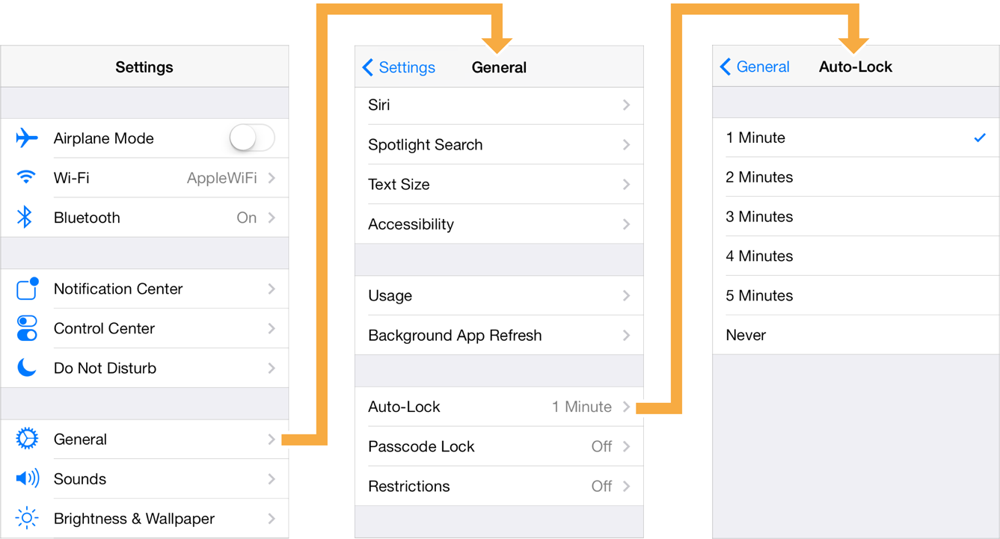

UINavigationController是iOS中最常用的多视图控制器之一，主要管理有层级关系的控制器。

创建UINavigationController
UINavigationController用栈的方式来管理所控制的视图控制器，至少要有一个被管理的视图控制器，称作根控制器。
创建UINavigationController可以指定根控制器，任何继承自UIViewController的类都可以作为根控制器：
RootViewController *rootVC = [[RootViewController alloc] init]; |
基本的使用方法
UINavigationController中的viewControllers属性存储栈中的所有被管理的控制器。
@property(nonatomic,copy) NSArray<__kindof UIViewController *> *viewControllers; |
入栈和出栈的基本操作有：
pushViewController:animated: // 进入下一个视图控制器 |
也提供一些属性，方便使用：
// 返回栈顶的控制器 |
隐藏导航栏
直接设置navigationBarHidden属性为YES，导航栏将被隐藏。也可以通过setNavigationBarHidden:animated:方法设置隐藏。
还有一些属性用于设置某种情形下导航栏的隐藏：
// 值为YES时，如果有没处理的点击手势就会隐藏和现实navigationBar |
导航栏设置
每当更改了栈顶的视图控制器时，导航栏上的内容会相应的改变。具体来说，导航栏的左、中、右侧会根据不同的控制器发生变化。可以根据需要，设置自定义的按钮或者使用系统提供的标准按钮。导航栏按钮是UIBarButtonItem类的实例
设置导航栏左则
导航栏左侧的按钮用于返回上一个视图控制器。左侧按钮的展现遵循如下规则：
- 如果栈顶的控制器有自定义的左侧按钮，那么将展现自定义的按钮。可以通过设置navigationItem的leftBarButtonItem属性，设置视图控制器的左侧按钮。
- 如果栈顶的控制器没有自定义的左侧按钮，但前一个控制器的navigationItem设置了backBarButtonItem属性，那么导航栏将展现该属性所设置的按钮。
- 如果都没有设置，那么将会展现一个默认的返回按钮，按钮的title来自前一个控制器的title属性。如果栈中只有一个控制器，将不显示任何按钮。
为了避免backBarButton的title过长、超出了显示的空间范围，导航栏会进行title字符串的裁剪。这仅仅针对前一个控制器设置的backBarButtonItem属性，如果栈顶的控制器设置了leftBarButtonItem或leftBarButtonItems属性，那么不会有任何影响。
设置导航栏中部
导航栏中部的展现遵循如下规则：
- 如果栈顶的控制器设置了titleView属性，指定了一个自定义的view，那么导航栏将展现这个view。
- 否则，导航栏将展现一个label。label显示的值来自于控制器的title属性
设置导航栏右侧
导航栏右侧的展现遵循如下规则：
- 如果栈顶的控制器有自定义的右侧按钮，那么将展现自定义的按钮。可以通过设置navigationItem的rightBarButtonItem属性，设置视图控制器的右侧按钮。
- 否则，导航栏的右侧将什么也不现实。
UINavigationItem
UINavigationController会为每一个入栈的UIViewController生成一个UINavigationItem，它包含了展示在导航栏上的按钮和视图，提供了一些配置属性和方法，上面已经提及到：
@property(nullable, nonatomic,copy) NSString *title; |
UINavigationBar
UINavigationBar是导航栏的视图View，一般是同UINavigationController一起使用。如果使用UINavigationController管理视图，UINavigationController会自动创建一个UINavigationBar。
@property(nonatomic,readonly) UINavigationBar *navigationBar; // The navigation bar managed by the controller. Pushing, popping or setting navigation items on a managed navigation bar is not supported. |
设置UINavigationBar的外观
UINavigationBar的外观可以通过一系列的属性设置，设置时可以通过[UINavigationBar appearance]这个代理进行。
// 设置导航栏的背景色 |
iOS7下可以通过设置translucent属性为NO，强制背景为不透明。如果没有明确的设定translucent的值，则系统会由当前上下文推断出一个值来。如果导航栏的背景图为自定义，translucent的值将从背景图的alpha值推断而来，背景图只要有一个像素的alpha值<1.0，则translucent的值就推断为YES。
如果设置translucent为YES，而自定义背景图却是不透明的，则系统会给图片加上一个小于1.0的系统预定义的透明度。
如果translucent置为NO，而自定义的背景图却是半透明的，如果bar设置了barTintColor的值， 系统将会给背景图设置一个barTintColor色的不透明背景。如果bar的barTintColor的值为nil，背景图的不透明背景由状态栏的barStyle决定，如果状态栏的barStyle值为UIBarStyleBlack则为黑色，为UIBarStyleDefault则为白色。
在iOS6及之前，translucent的默认值为NO。之后，如果barStyle设为UIBarStyleBlackTranslucent则其值为YES。